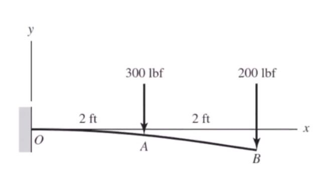
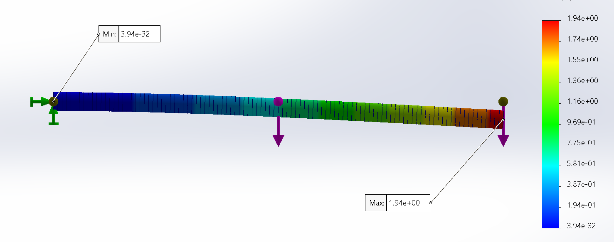
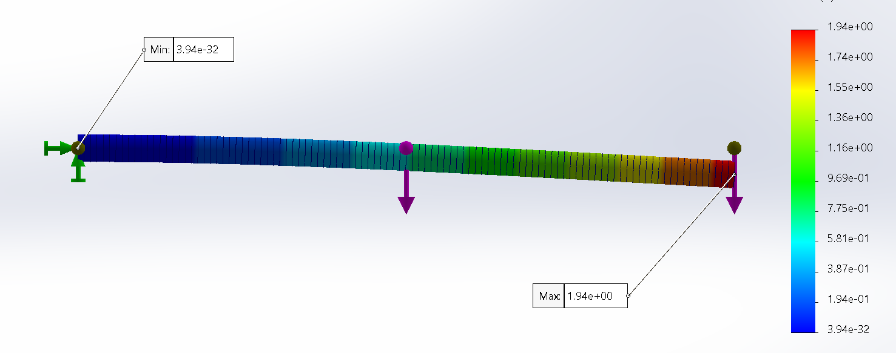

🔧 SOLIDWORKS
Beam Deflection Study
Finite Element Analysis (FEA)
1. Introduction and Objective
This project investigates the vertical deflection behavior of a cantilever beam subjected to two concentrated loads using both
classical beam theory (hand calculations) and Finite Element Analysis (FEA) in
SOLIDWORKS Simulation.
The primary objective is to validate the analytical solution using superposition against numerical simulation results and to
demonstrate how FEA can be used as a reliable engineering tool for predicting structural response.
This study answers:
- What was analyzed
- Why the analysis matters
- What the results mean
- How confident we are in the conclusions
2. Problem Description
2.1 Beam Geometry and Material

- Beam type: Cantilever beam (fixed at one end, free at the other)
- Material: 7079 Aluminum
- Young’s Modulus (E):
10.4 × 10⁶ psi
- Outside Diameter: 2.0 in
- Inside Diameter: 1.5 in
- Area Moment of Inertia (I):
0.5369 in⁴
The beam is modeled as a hollow circular tube — commonly used in lightweight structural applications due to its high stiffness-to-weight ratio.
2.2 Loading and Boundary Conditions
- The beam is fully fixed at point O (no translation or rotation)
- Two vertical downward point loads:
- Load at A = 300 lbf (downward)
- Load at B = 200 lbf (downward)
- Locations:
- O → A = 2 ft = 24 in
- O → B = 4 ft = 48 in
3. Analytical (Hand) Calculation
3.1 Methodology
Based on Euler–Bernoulli beam theory and the principle of superposition.
3.2 Governing Equation
y_B = - (F_B * l³) / (3 * E * I)
+ (F_A * a²) / (6 * E * I) * (a - 3 * l)
3.4 Analytical Result
 

Deflection at point B ≈ -1.94 inch
(Negative sign indicates downward deflection)
4. Finite Element Analysis (FEA)
4.1 Software and Tools Used
CAD & Simulation Software : SOLIDWORKS Simulation
Study Type : Static Structural Analysis
Element Type : Beam Elements
Solver : Linear Static Solver
4.2 FEA Model Setup
- Geometry identical to analytical model
- Material: 7079 Aluminum
- Fixed constraint at point O
- Point loads: 300 lbf at A, 200 lbf at B
- Adequate mesh refinement for convergence
5. Results and Interpretation
5.1 Displacement Results
- Maximum displacement ≈ 1.94 in (at point B)
- Minimum displacement ≈ 0 in (fixed end)
5.2 Comparison – Analytical vs FEA
| Method |
Deflection at B (in) |
| Hand Calculation |
1.94 |
| FEA (SOLIDWORKS) |
1.94 |
Near-perfect agreement — validates both the analytical formulation and the FEA setup.
6. Significance of the Study
Classical theory and modern simulation complement each other:
- Hand calculations → physical insight & quick validation
- FEA → visualization, scalability, complex geometry handling
10. Conclusion
This beam deflection study successfully validates analytical predictions using Finite Element Analysis.
The excellent agreement between theory and simulation confirms the accuracy of the model and highlights
the power of combining first-principles engineering with modern computational tools.
A solid foundation for future structural design and optimization work.
End of Project Documentation